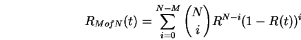

Next:
ตัวอย่าง: การคำนวณค่าความน่าเชื่อถือของระบบอนุกรม
Up:
สรุปสูตรการคำนวณความน่าเชื่อถือของระบบ โดยวิธีการแจกแจง
Previous:
ความน่าเชื่อถือของ ระบบขนาน
Contents
Index
ความน่าเชื่อถือของ ระบบ M ใน N

(11.3)
Vara Varavithya 2002-03-09